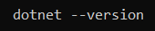
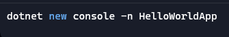
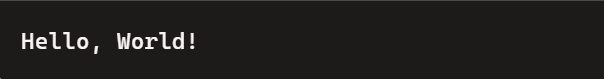

Welcome to Day 6
Here we learn about step-by-step guide to install C#, create a project folder, and print "Hello, World!" in your console application.
Install C# (via .NET SDK):
Follow these steps to install the .NET SDK:
- Visit https://dotnet.microsoft.com/en-us/download
- Download and install the latest .NET SDK for your operating system.
- Verify the installation by opening a terminal or command prompt and typing:

If the version is displayed, you're good to go!
Create a New Project Folder:
- Open a terminal or command prompt.
- Navigate to the directory where you'd like to create your new project folder.
- Run the following command:

- A new directory named HelloWorldApp will be created in your current location.
- Inside this directory, the basic template files for a .NET console application(like Program.cs and .csproj files) will be set up.
Navigate to the folder and run the app:
- Move into the project directory:
- To build and run the default"Hello,World!"program, use:
- You'll see Hello World! printed in the terminal.
